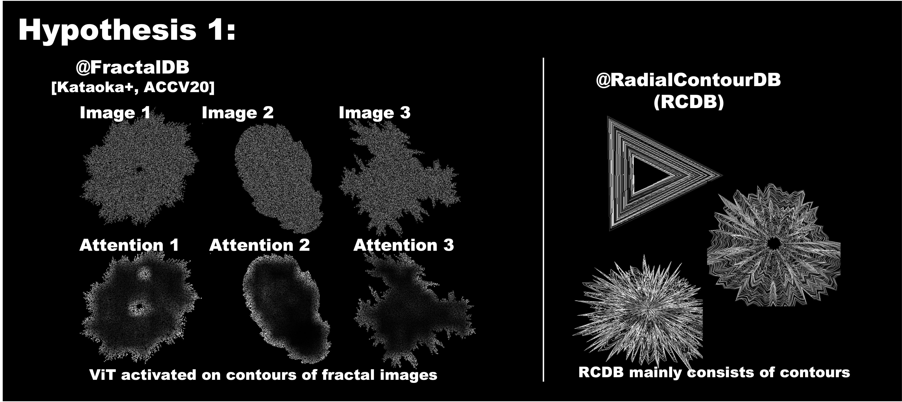
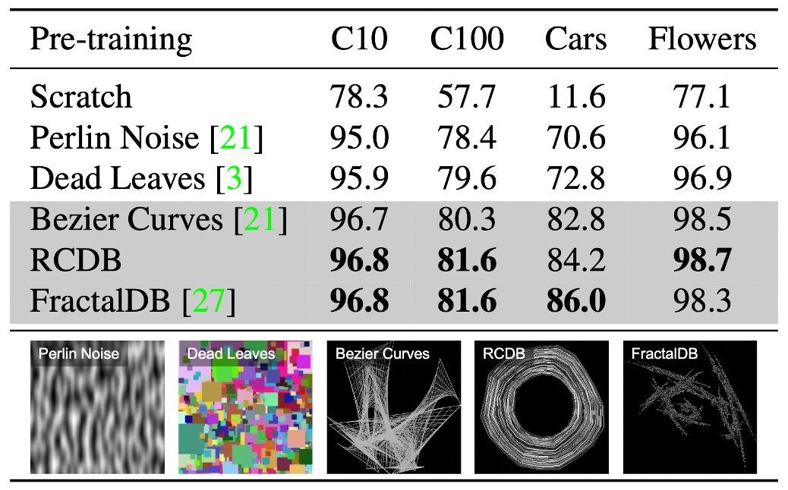
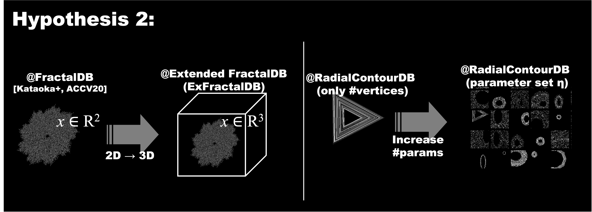
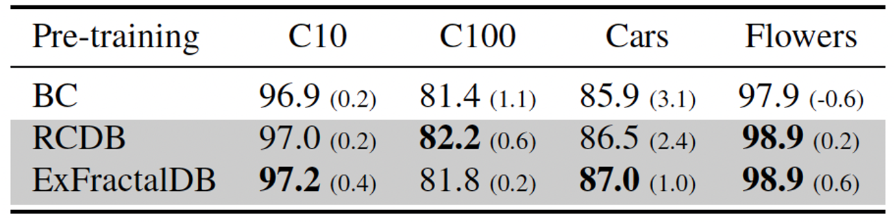
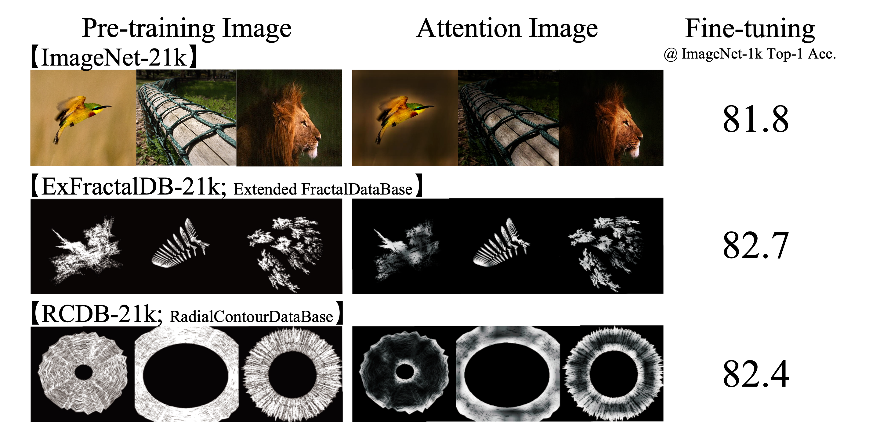
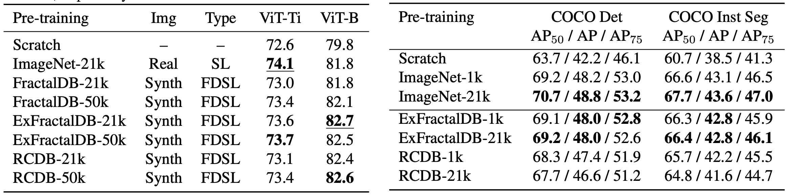
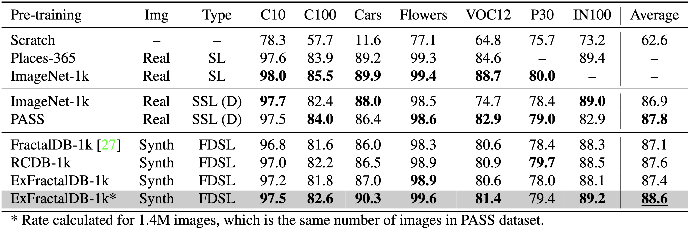
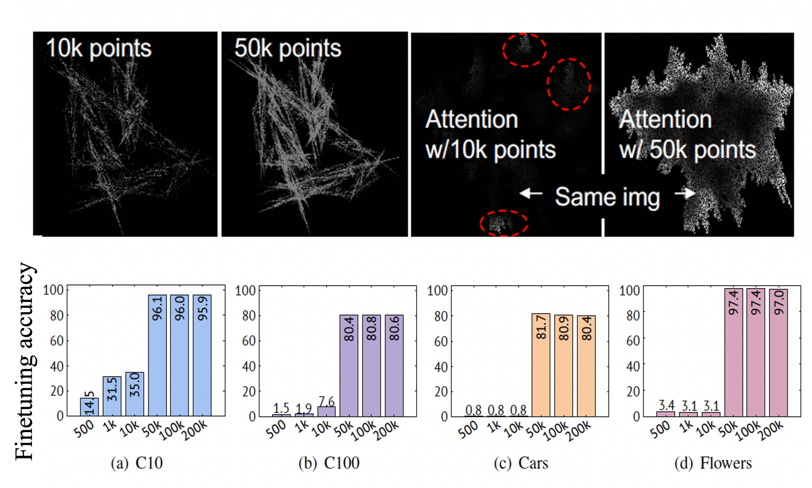
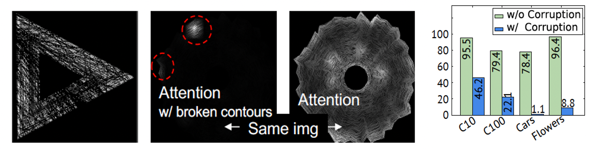

In the present work, we show that the performance of formula-driven supervised learning (FDSL) can match or even exceed that of ImageNet-21k without the use of real images, human-, and self-supervision during the pre-training of Vision Transformers (ViTs). For example, ViT-Base pre-trained on ImageNet-21k shows 81.8% top-1 accuracy when fine-tuned on ImageNet-1k and FDSL shows 82.7% top-1 accuracy when pre-trained under the same conditions (number of images, hyperparameters, and number of epochs; see figure below). Images generated by formulas avoid the privacy/copyright issues, labeling cost and errors, and biases that real images suffer from, and thus have tremendous potential for pre-training general models. To understand the performance of the synthetic images, we tested two hypotheses, namely (i) object contours are what matter in FDSL datasets and (ii) increased number of parameters to create labels affects performance improvement in FDSL pre-training. To test the former hypothesis, we constructed a dataset that consisted of simple object contour combinations. We found that this dataset can match the performance of fractals. For the latter hypothesis, we found that increasing the difficulty of the pre-training task generally leads to better fine-tuning accuracy.
Two hypotheses
To enhance the performance of FDSL, we test the following hypotheses 1 & 2:
Hypothesis 1: Object Contours are what matter in FDSL datasets
In our preliminary study we found that attention was focused on the outer contours of the fractals
We created a new dataset that consists only of contours – Radial Contour DataBase (RCDB)
Despite the lack of any texture, RCDB performed close to FractalDB and outperformed ImageNet-21k


Hypothesis 2: Increased number of parameters in FDSL pre-training
We tested various synthetic datasets with varying complexity of images
For RCDB, we changed the number of polygons, radius, line width, resizing factor, and Perlin noise
Complex images increases the difficulty of the pre-training task and leads to better downstream performance


Samples images from our FDSL datasets
Comparison: ImageNet-1k, MS COCO, Other datasets
We have found that vision transformers (ViT) can be successfully pre-trained without real images, human- and self- supervision, and can exceed the accuracy of ImageNet-21k pre- training when fine-tuned on ImageNet-1k. We constructed a new dataset Radial Contour DataBase (RCDB) based on the as- sumption that contours are what matter for the pre-training of ViT. RCDB also exceeded the performance of ImageNet-21k pre- training, while consisting only of contours.

(Left) Comparison of ImageNet-1k fine-tuning. Accuracies obtained with ViT-Ti/B architectures are listed. 21k/50k indi- cates the number of classes in the pre-training phase. Best and second-best values for a given dataset are in underlined bold and bold, respectively. (Right) Comparison of object detection and instance segmen- tation. Several pre-trained models were validated on COCO dataset. Best values at each learning type are in bold.

Comparison of pre-training for SL/SSL methods. For SSL, (D) indicates DINO. Best values at each learning type are in bold.

Failure modes: FractalDB and RCDB
We investigate the minimum number of points used in the rendering of fractals in FractalDB. The following figures shows the results and image examples in the point-rendered FractalDB. According to the performance rates in the figures, the pre-trained models acquire a good representation when the number of fractal points is 50k or higher, at which point the fractal images start to form a contour.

We verify RCDB images with and without broken object contours, as shown in the following figures. We deliberately draw 1k lines with the same color as the background. The lengths and positions of the lines are fully randomized. We adjust the thickness of the lines so that the object contours of RCDB are corrupted but the main frame does not disappear like in the figures.

Citation
@InProceedings{Kataoka_2022_CVPR,
author = {Kataoka, Hirokatsu and Hayamizu, Ryo and Yamada, Ryosuke and Nakashima, Kodai and Takashima, Sora and Zhang, Xinyu and Martinez-Noriega, Edgar Josafat and Inoue, Nakamasa and Yokota, Rio},
title = {Replacing Labeled Real-Image Datasets With Auto-Generated Contours},
booktitle = {Proceedings of the IEEE/CVF Conference on Computer Vision and Pattern Recognition (CVPR)},
month = {June},
year = {2022},
pages = {21232-21241}
}
This work is based on results obtained from a project, JPNP20006, commissioned by the New Energy and Industrial Technology Development Organization (NEDO).
Computational resource of AI Bridging Cloud Infrastructure (ABCI) provided by National Institute of Advanced Industrial Science and Technology (AIST) was used.